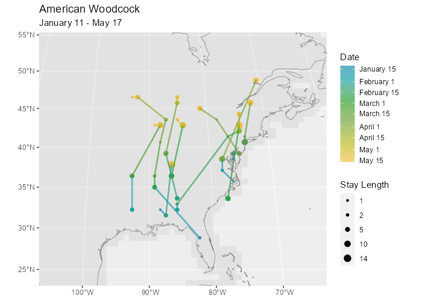

An R package to predict changes in bird distributions and generate synthetic migration routes based on BirdFlow models.
This package is under development and not yet formally released. Function names and arguments may change.
Installation
Install just the package:
if(!require("remotes"))
install.packages("remotes")
remotes::install_github("birdflow-science/BirdFlowR")Or to install with example data and vignette:
installed <- rownames(installed.packages())
if(!"remotes" %in% installed)
install.packages("remotes")
if(!"rnaturalearthdata" %in% installed)
install.packages("rnaturalearthdata")
remotes::install_github("birdflow-science/BirdFlowModels")
remotes::install_github("birdflow-science/BirdFlowR", build_vignettes = TRUE)See vignette("Installation") for troubleshooting and more installation options.
Usage
The two primary functions are predict() to project distributions and route() to generate synthetic routes.
route_migration() is a wrapper to route() which automates sampling locations from the a distribution for the start of the migration and setting the start and end dates to route for the migration window. We can use it to create synthetic routes for a species.
library(BirdFlowR)
library(BirdFlowModels)
bf <- amewoo
species(bf)
#> [1] "American Woodcock"
# Generate routes for the prebreeding migration
rts <- route(bf, n = 10, season = "prebreeding")
# Plot routes
plot_routes(rts, bf)
Visualize the movement in the BirdFlow model for a timestep.
plot_movement_vectors(bf, start = 12)
Learn more
-
vignette("BirdFlowR")has a longer introduction to the package, and how to usepredict()androute()to project bird distributions and movement. -
vignette("Installation")for detailed installation instructions. -
vignette("Preprocess")covers downloading and formatting data for model fitting withpreprocess_species(), importing fitted models withimport_birdflow(), and reducing model size withsparsify().
- Read the paper:
- BirdFlow: Learning Seasonal Bird Movements from Citizen Science Data Miguel Fuentes, Benjamin M. Van Doren, Daniel Fink, Daniel Sheldon bioRxiv 2022.04.12.488057; doi: https://doi.org/10.1101/2022.04.12.488057